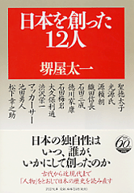

Lời Mở Đầu

hật Bản hiện đang ở thời kỳ đổi mới lớn.

Trong thời kỳ đổi mới này, cái gì sẽ thay đổi và cái gì sẽ không thay đổi? Nếu thay đổi thì thay đổi như thế nào, yếu tố cũ nào nên giữ lại, yếu tố mới nào nên tiếp thu thêm?
Nghĩ như trên, trước hết phải hiểu thấu cái dòng lịch sử đã biến thành xương, thành thịt, thành con tim, thành “lòng” người Nhật.
Trong những cái coi là “có tính Nhật Bản”, có cái đã hình thành sau cuộc chiến tranh Thái Bình Dương, [1] cũng có cái mới chỉ lan truyền rộng ra từ những năm chót của thập niên 1980, tức là khi “cơn thịnh vượng kinh tế bong bóng” hay là khi “xã hội ít con” đã xuất hiện, song cũng có cái đã được vun trồng trong sự kế thừa liên miên của lịch sử. Phần lớn những cái đó đã trở thành “tính dân tộc”, “tính quốc dân” khó có thể thay đổi được.
Xưa nay, Nhật Bản có đủ loại hình văn hóa du nhập vào. Tổ tiên người Nhật đã tiếp xúc bằng con mắt kinh hoàng những văn hóa về hình thức sinh hoạt, từ quần áo, thức ăn, nhà ở tới kỹ thuật, học vấn, nghệ thuật, đạo đức, tôn giáo, chính trị, v.v., rồi đã chọn lọc kỹ càng, cái thì bỏ đi, cái thì tiêu hóa đi rồi cải tạo và vun đắp thành “tính Nhật”, “kiểu Nhật”. Ðây chính là một đặc trưng lớn của Nhật Bản và của người Nhật.
Hiện nay, Nhật Bản đang ở thời kỳ biến chuyển mạnh. “Chiến tranh lạnh” kết thúc đã làm cho thế giới đổi mới, đồng thời cái “thể chế hậu chiến” [2] dễ thở ở Nhật Bản cũng đã băng hoại luôn rồi. Chính lúc này mới là lúc cần phải nhìn lại lịch sử, đi tìm cái lai lịch của Nhật Bản, tìm hiểu và nắm cho vững cái đặc sắc của xã hội và nền văn hóa mà người Nhật đã vun đắp lên.
Những vấn đề thời sự như cục diện chính trị, biến động thị trường từng ngày từng giờ thì đều dễ hiểu, dễ kể lại. Ai ai cũng ngóng nghe, và báo chí cũng loan truyền rộng rãi. Tuy nhiên, nếu nghĩ tới tương lai nước Nhật và người Nhật, tới cái mối quan hệ của nước Nhật và người Nhật với thế giới, thì cần phải nhìn thấu suốt lịch sử cùng bản chất của nước Nhật và người Nhật.
Trong những căn nguyên đã làm thành cái đặc trưng của nước Nhật Bản và người Nhật Bản, cái đặc sắc của xã hội Nhật Bản, thì có “vật” và “người”, tức là “phong thổ” và “nhân vật”.
Nói về phong thổ, Nhật Bản quả có một địa thế đặc biệt trên thế giới.
Thứ nhất, Nhật Bản nằm trong vùng gió mùa châu Á, có khí hậu tương đối ấm áp và ẩm ướt. Trạng thái này rất thích hợp cho việc trồng lúa. Vì thế, nền nông nghiệp trồng lúa đã phát triển rộng lớn. Lật lại những trang sử của Nhật Bản, người ta thấy rằng ngay sau thời đại bắt cá, gọi là thời “hoa văn dây thừng”, [3] thời đại canh tác thóc lúa đã xuất hiện rồi. Thời đại “du mục, chăn nuôi” vốn chiếm vị trí quan trọng trong lịch sử thế giới, thì lại không thấy có ở Nhật Bản. Núi non hiểm trở và bình nguyên nhỏ hẹp của lãnh thổ Nhật Bản không thích hợp cho việc xua đuổi chăn nuôi những đàn súc vật đông đảo. Vì vậy, người Nhật chỉ có những quan hệ rất mỏng manh với gia súc, và như vậy so với những nước khác vốn đã có kinh nghiệm của thời chăn nuôi gia súc, thì người Nhật tỏ ra yếu kém về thuật chế ngự những con vật có trí khôn.
Ðặc điểm thứ hai là lãnh thổ Nhật Bản do bốn hòn đảo lớn hình thành và ngăn cách với những nước khác bằng một “vùng biển không hẹp”. Ðiều này có nghĩa là việc vượt biển vào Nhật Bản bằng số đông có tổ chức tập thể, có mục đích quân sự hoặc mục đích chính trị, thì rất khó. Tuy nhiên, vùng biển này lại không rộng đến nỗi không thể vượt qua được, dù chỉ bằng kỹ thuật thô sơ của thời cổ xưa. Vì vậy, sự ghi chép về người Nhật xuất hiện trong triều đình Trung Hoa đã có từ thế kỷ thứ nhất sau công nguyên.
Nói cách khác, quần đảo Nhật Bản vừa có tính cách cô lập về mặt quân sự và chính trị, song mặt khác lại có tính giao lưu văn hóa từ cổ xưa. May mắn thay, ở bờ bên kia vùng biển không quá hẹp cũng không quá rộng này, có bán đảo Triều Tiên và đại lục Trung Hoa, tức là một trong những vùng mở mang tiên tiến nhất trong lịch sử văn minh nhân loại.
Ở xa đại lục một quãng cách tương tự như Nhật Bản còn có Cuba và Madagasca. Song trong trường hợp những nước này, thì châu lục Mỹ hoặc châu lục Phi ở bờ bên kia, lại chỉ có nền văn minh cổ đại không lấy gì làm phát triển cho lắm. Bởi vậy, những đảo quốc này đã không được sự du nhập liên tục của những văn hóa cao độ từ đại lục vào. Ở điểm này, có thể nói cái vị trí địa lý của Nhật Bản, vừa cách xa không để cho các thế lực quân sự vượt qua được, nhưng lại vừa đủ gần để cho văn hóa vãng lai được, thì quả là độc đáo trên thế giới.
Ðặc điểm thứ ba là bốn hòn đảo chính của Nhật Bản làm thành một nhóm rất gọn. Hokkaido phát triển muộn hơn, chứ Kyushu, Shikoku và Honshu thì đã hợp lại thành một nước và có điều kiện thiên nhiên để phát triển. Vì vậy, khi có cùng một nền văn hóa đã phát triển, nên nếu có một thế lực chính trị nòng cốt ra đời, thì toàn thể dễ trở thành một quốc gia.
Chính vì vậy mà kể từ khi lịch sử viết thành chữ ra đời, tức là từ tiền bán thế kỷ thứ VII, cho tới nay, một quãng thời gian khoảng chừng 1400 năm, ở Nhật Bản đã có nhiều cuộc tranh chấp chính trị, nhiều vụ nội loạn, song trong tất cả những bè phái tranh giành nhau như vậy, không thấy có ai tự mình tuyên bố rằng “ta đây là một nước khác không phải là Nhật Bản”. Phần lãnh thổ chủ yếu thì chưa bao giờ bị nước ngoài cai trị lâu năm cả, quốc gia cũng chưa bao giờ bị phân cắt.
Ba điều kiện kể trên, tức là “địa thế và khí hậu”, “vị trí quốc tế” và “sự tóm gọn của lãnh thổ”, quả thật đã có ảnh hưởng quan trọng và lớn lao tới lịch sử Nhật Bản. Có lẽ cũng vì vậy mà người Nhật ưa luận về “phong thổ”, bất cứ sự việc gì cũng thuyết giải từ phong thổ. Tuy nhiên, nếu chỉ chú trọng vào phong thổ không thôi, thì đó cũng có khi nguy hiểm.
Thí dụ võ tướng Oda Nobunaga là người có tính tình rất phóng đạt, thì thường được giải thích rằng đó là bởi vì ông sinh trưởng ở vùng bình nguyên Mino-Owari rộng lớn. Song le, thời đại Nobunaga sinh ra, thì bình nguyên đó toàn là đồng lầy, có sông ngòi chi chít và rất ít quãng rộng cho ngựa chạy vòng quanh. Nghĩa là khó có thể nói rằng nhờ sinh trưởng ở vùng đồng bằng mà Nobunaga đã có tính tình phóng đạt như vậy được.
Nói cách khác, từ luận về phong thổ, rồi đi đến giải thích tính tình con người, hay có khi cả tình trạng của một chính quyền, là việc làm gò bó. Phong thổ Nhật Bản quả có ảnh hưởng rất lớn tới nước Nhật và người Nhật, song cái gì cũng chứng minh bằng sự xuất phát từ đó, thì e dễ sinh ra nhầm lẫn.
Ngược lại, ảnh hưởng của một “nhân vật” đặc thù nào đó, hoặc của một giai tầng hay tập thể mà nhân vật đó là tượng trưng, thì không nhỏ. Có không ít những cái mà nay ta coi là đương nhiên, thì một lúc nào đó trước đây đã do một người nào đó làm và từ đó đẻ ra tính độc đáo, tạo ra tính dân tộc riêng biệt của Nhật Bản.
Dĩ nhiên cái đó không phải chỉ do năng lực của cá nhân đó hay sự ngẫu nhiên mà xảy ra được. Có lẽ nên nói rằng người đó, giai tầng người đó đã làm công việc tất yếu lịch sử, thì đúng hơn. Thế nhưng để cho dễ hiểu, nếu coi sự việc như vậy chẳng qua là đã được tượng trưng hóa bởi một nhân vật đặc thù nào đó, thì đây không phải là phương pháp dở.
Sách này chọn 12 “nhân vật” tượng trưng đã để lại ảnh hưởng sâu đậm đối với nước Nhật cho tới ngày nay.
Những người này đã hành động như thế nào trong giai đoạn nào của lịch sử? Ðiều mà họ đã làm còn tồn tại trong người Nhật ngày nay như thế nào? Nó đã kìm hãm ý nghĩ của người Nhật, của xã hội Nhật như thế nào? Thế rồi từ nay về sau, trong sự giao tế với thế giới, nó sẽ ảnh hưởng ra sao?
Cuốn sách này chính là muốn luận về những “nhân vật” này từ quan điểm như vậy.
Trong luận cứ như vậy, cả những “sự thật” đã được thần thoại hóa trong lịch sử cũng sẽ được đề cập, chứ không riêng gì sự nghiệp lịch sử của người đó, lai lịch xác đáng của người đó, hình ảnh đúng của người đó trong thời đại người đó thực sự sống. Tuy nhiên, cái tổng thể, kể cả những điều như vậy, đang có ảnh hưởng như thế nào tới nước Nhật và người Nhật ngày nay, sẽ để lại cái gì cho Nhật Bản sau này, và sẽ tiếp tục có ảnh hưởng như thế nào, chính là điều chúng tôi có chủ ý tìm hiểu ở đây.
Chú thích:
[1] Chiến tranh Thái Bình Dương là nói mảng Thái Bình Dương của trận Chiến tranh thế giới lần thứ hai.
[2] “Thể chế hậu chiến” cũng gọi là “thể chế năm 55.” Xem chú 104 (Chương VII).
[3] Jomon Jidai.